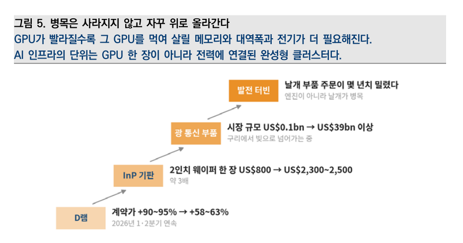
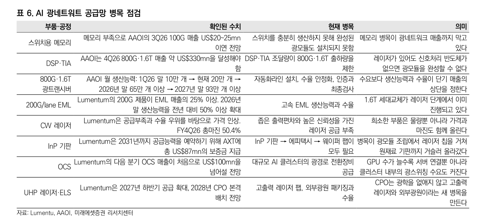

한 줄: AI 광통신의 제약은 더 이상 "트랜시버를 몇 개 만드느냐"가 아니다.
DSP·TIA → 고속 EML → CW 레이저 → InP 기판으로 공급망 상류를 향해 거슬러 올라가는 중이고,
상류로 갈수록 대체가 어려워 물량뿐 아니라 가격과 마진까지 함께 오른다.
그리고 CPO는 이 병목을 없애는 게 아니라 고출력 레이저·외부광원이라는 새 병목을 만든다.
01
왜 광통신이 지금 병목의 한 층인가
연산칩이 빨라지자 제약이 그 칩에 데이터를 넣고 꺼내는 쪽으로 옮겨갔다.
AI 인프라의 단위는 GPU 한 장이 아니라 전력에 연결된 완성형 클러스터이고,
그 클러스터 안에서 랙 내부·랙 간 통신이 연산성능의 핵심으로 이동했다.
CPO·NPO 시장 규모 전망이 2025년 약 $100mn → 2030년 $40bn이라는 숫자가 그 이동의 크기다.

그림 5. 병목 사다리에서 광통신은 메모리 위, 전력 아래에 있다. 광통신 부품 시장 $0.1bn → $39bn 이상, 그 아래 원재료인 InP 2인치 웨이퍼는 $800 → $2,300~2,500(약 3배). 완제품보다 원재료가 먼저, 더 크게 오른 게 이 층의 성격을 말해준다. 자료: 외신 종합·미래에셋증권
광모듈 조립완제품 — 캐파 문제
←
DSP · TIA신호처리 반도체
←
EML · CW 레이저수율 · 출력편차
←
InP 기판원재료 — 대체 불가
병목이 거슬러 올라가는 방향으로 읽어야 한다. 아래로 내려갈수록 공급자가 적고, 증설에 시간이 더 걸리며,
따라서 가격결정력이 세진다. Lumentum이 2031년까지의 공급능력을 예약하려고 AXT에 총 $87mn의 보증금을
미리 지급했다는 사실이 이 방향성을 그대로 보여준다 — 완제품 업체가 원재료를 5년치 선점하고 있다.
02
공급망 병목 점검표 — 이 노트의 본체

표 6. 부품·공정 8개의 확인된 수치 · 현재 병목 · 투자 의미. 이 노트에서 가장 자주 다시 볼 표. 자료: Lumentum·AAOI·미래에셋증권
⚠ 메모리 병목이 광네트워크 매출까지 막는다 교차 병목
스위치용 메모리 부족으로 AAOI의 3Q26 100G 매출 $20~25mn이 이연 전망.
스위치를 못 만들면 완성된 광모듈도 설치되지 못한다. 병목 층끼리 서로를 막는다는 뜻 —
한 층만 보고 투자하면 틀린다.
⚠ 레이저가 있어도 DSP·TIA가 없으면 모듈이 안 된다 조달 제약
AAOI는 4Q26 800G·1.6T 매출 약 $330mn을 달성해야 하는데, DSP·TIA 조달량이 출하량의 상단을 제한한다.
✅ 희소한 부품은 가격과 마진을 함께 올린다 가격결정력
Lumentum은 CW 레이저의 공급부족과 수율 우위를 바탕으로 가격을 인상했고
FY4Q26 총마진 50.4%를 기록했다. 물량만 늘어나는 병목과 가격까지 올라가는 병목은 완전히 다른 투자다.
속도 관련 숫자도 정리해둔다. AAOI 월 생산능력 1Q26 말 10만 개 → 현재 20만 개 → 26년 말 65만 개+ → 27년 말 93만 개+.
제약은 수요가 아니라 자동화라인 설치·수율 안정화·인증과 최종검사다.
Lumentum의 200G/lane 제품은 이미 EML 매출의 25% 이상이고 26년 말 생산능력을 전년비 50%+ 확대한다 —
1.6T 세대교체가 레이저 단계에서 이미 진행 중이라는 뜻이다.
OCS(광경로 전환장비)는 다음 분기 매출이 처음으로 $100mn을 넘을 전망 —
GPU가 늘수록 서버 연결뿐 아니라 클러스터 내부의 광스위칭 수요도 커진다.
03
CPO에 대한 흔한 오해
⚠ "CPO가 오면 광모듈·레이저 수요가 줄어든다"는 틀렸다
보고서의 한 줄이 정확하다 — "CPO는 광학을 없애지 않고 고출력 레이저와 외부광원이라는 새 병목을 만든다."
Lumentum은 2027년 하반기 공급 확대, 2028년 CPO 본격 배치를 전망하는데,
여기서 제약은 고출력 레이저 팹과 외부광원(ELS) 패키징·수율이다.
즉 CPO는 병목을 없애는 기술이 아니라 병목을 트랜시버에서 레이저 쪽으로 옮기는 기술이다.
구조 전환을 "수요 소멸"로 읽으면 정확히 반대로 베팅하게 된다.
04
판정 · 트리거
테제
광통신은 "어느 클라우드가 이기든 팔리는" 병목 공급자 포지션이다.
AI 사업자가 컴퓨트를 더 만들려면 이 부품을 반드시 사야 하고, 공급이 단기간에 못 늘면
판매량뿐 아니라 가격도 오른다. 승자를 고를 필요가 없다는 게 이 층의 매력이다.
어디를 보나
상류일수록 좋다. InP 기판 > CW/EML 레이저 > DSP·TIA > 광모듈 조립 순으로
대체 난이도와 가격결정력이 높다. 조립 단계는 캐파 경쟁이라 마진이 희석되기 쉽다.
국내 밸류체인 매핑은 아직 안 했다 — 다음 노트의 과제.
반대논리
① 병목의 수명이 짧다 — AAOI 캐파가 1년 반 만에 10만→93만 개면 27년 말엔 공급이 붙는다.
병목 프리미엄은 영원하지 않고, 가격이 오르는 구간과 물량만 늘어나는 구간은 수익률이 전혀 다르다.
② 메모리처럼 교차 병목에 발목이 잡히면 수요가 있어도 매출 인식이 밀린다(AAOI 3Q26 사례).
③ 이 표는 Lumentum·AAOI 두 회사 실적발표 기반이라 공급자 측 낙관이 섞여 있다.
판정
공부 단계 — 카테고리 개설이 목적. 병목 지도는 선명하지만 이 노트에는 아직 국내 종목이 하나도 없다.
투자 가능한 형태가 되려면 ⓐ 국내 광트랜시버·레이저·기판 밸류체인 매핑,
ⓑ 각 사의 800G/1.6T 인증 통과 여부와 고객사, ⓒ 가격 액션 확인이 필요하다.
그 전까지는 반도체·AI 인프라 노트의
병목 사다리를 읽는 보조 렌즈로만 쓴다.
KPI
① InP 2인치 기판 가격(현재 $2,300~2,500) ·
② AAOI 800G·1.6T 분기 매출의 가이던스 달성 여부(4Q26 $330mn) ·
③ Lumentum 총마진(FY4Q26 50.4% — 가격결정력의 직접 지표) ·
④ AAOI 월 생산능력 실제 도달치 vs 계획(26년 말 65만 개) ·
⑤ OCS 매출 $100mn 돌파 ·
⑥ 28년 CPO 배치 일정의 전진/후퇴.
출처: 미래에셋증권 「AI Focus — 은하지능전설 2부: The tokens must flow」(2026.08.21, 한종목) 中 V장 표 6·그림 5.
원 보고서의 산업 전체 논지는 반도체 · AI 인프라 노트에,
자본·신용 파트는 CAPEX 게이트 워치에 분리 기록했다.
수치는 각 사 실적발표 기준이며 공급자 측 전망이 포함돼 있다. 원문 도표는 직접 캡처해 인용(교육·기록 목적). 투자권유 아님.